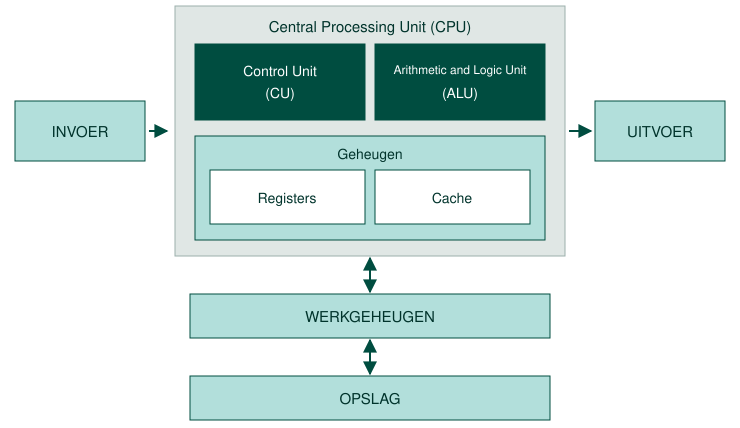
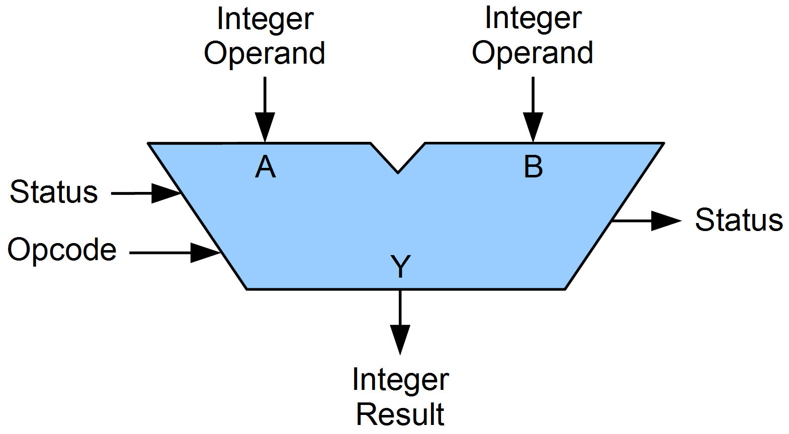
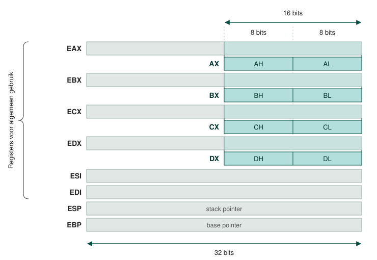
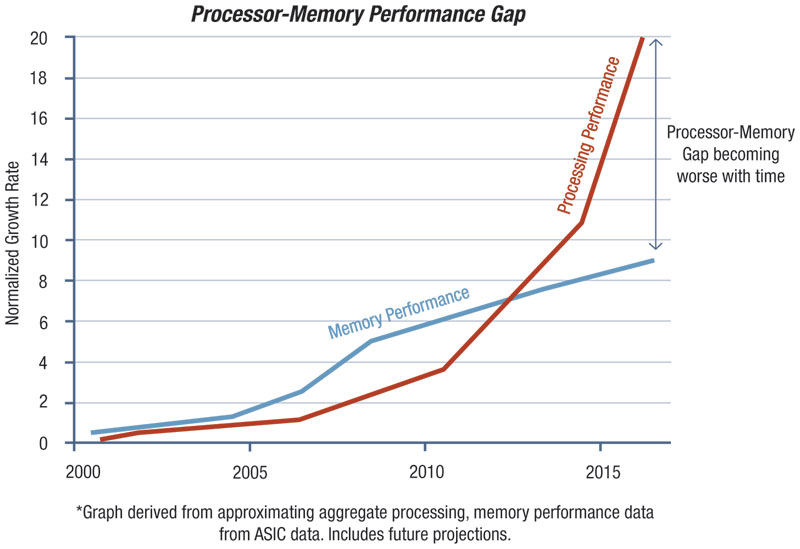

De processor bestaat grofweg uit vier verschillende onderdelen:

Een Arithmetic and Logic Unit is een elektronisch circuit, uitgewerkt met behulp van vele transistoren dat wiskundige en logische bewerkingen kan uitvoeren op binaire gehele getallen. We hebben het dan over bijvoorbeeld optellen, vermenigvuldigen en het vergelijken van twee getallen. Een processor kan één of meerdere ALU's bevatten.
Naast een ALU is er veelal (maar niet altijd) ook een FPU of Floating Point Unit aanwezig in de processor. Deze kan wiskundige bewerkingen uitvoeren op binaire kommagetallen.
De eerste invoer voor de ALU is het geheugenadres van de data waarop de bewerking moet worden uitgevoerd. Dit worden ook wel de operands genoemd.
De tweede invoer voor de ALU is de wiskundige of logische bewerking die uitgevoerd moet worden. Dit wordt de opcode genoemd.
Een instructie bestaat uit een opcode en één of meerdere operands.

De Control Unit is een elektronisch circuit, uitgewerkt met vele transistoren, die de ALU en eventueel FPU aanstuurt. Het doet dit op basis van de instructies die uitgevoerd moeten worden in een computerprogramma.
De CU gaat na welke opcode moet worden uitgevoerd, haalt de operands op uit het werkgeheugen, kopieert deze naar de registers en laat de ALU of FPU het resultaat uitrekenen. Het resultaat van de instructie wordt door de CU terug weggeschreven naar de registers en eventueel het werkgeheugen.
De opcode is de wiskundige of logische bewerking die moet uitgevoerd worden op de operands.
Stel dat de instructie ADD, A, B is, dan zijn A en B de operands en ADD is de opcode.
Het spreekt voor zich dat de CU een erg belangrijke taak vervult in een processor.
Registers zijn kleine geheugenplaatsen die aanwezig zijn op de PCB van de processor. Ze werken op dezelfde kloksnelheid als de processor wat ze heel snel maakt. Ze zijn vele malen sneller dan de trage harde schijf en veel sneller dan het werkgeheugen.
Wanneer een programma instructie uitgevoerd wordt door de CU zal de opcode en de data eerst gekopieerd worden (vanuit het werkgeheugen / caches) naar de juiste registers. Zo onderscheiden we bijvoorbeeld data registers waar binaire gehele getallen en binaire komma getallen opgeslagen in worden en instructie registers voor de opcode die uitgevoerd moet worden.

De functies van ieder individueel register overstijgt het bereik van deze cursus. Onthoud enkel dat het register noodzakelijk is omdat daarin tijdelijk de opcode en data staat die uitgevoerd moet worden door de processor. Uiteindelijk wordt het resultaat van de bewerking dan terug gekopieerd naar de caches / werkgeheugen.
De breedte van die registers volgt uit het type processor: een 32 bit processor heeft registers van 32 bits en een 64 bit processor registers van 64 bits. Omdat een operand een geheugenadres is dat in zo'n register moet passen, legt die breedte meteen ook vast hoeveel werkgeheugen de processor kan aanspreken: met 32 bits zijn er 2^32 adressen en met 64 bits 2^64. Waar de grens dan precies ligt zie je bij Random Access Memory.
De aandachtige lezer zal opmerken dat, wanneer een instructie moet worden uitgevoerd, er data moet uitgewisseld worden tussen processor en werkgeheugen. De instructie en data dienen uit het werkgeheugen te worden gehaald en gekopieerd naar de registers. Na het uitvoeren van de instructie wordt dit proces herhaald. Niet zozeer het berekenen maar wel het kopiëren vanuit het werkgeheugen naar het register (en terug) neemt heel wat tijd in beslag.
Het werkgeheugen kan het tempo van de processor niet volgen en terwijl processors bijna exponentieel sneller worden blijft de snelheid van het werkgeheugen steken. De reden hiervoor zie je later, wanneer we Random Access Memory bespreken.

Om CPU-RAM performance gap te dichten gebruikt men cache geheugens. Dit zijn kleine geheugens die ook aanwezig zijn op de PCB van de processor. Ze werken iets trager dan de registers maar zijn wel iets groter. We hebben het dan over bijvoorbeeld de Level 1 , Level 2 en Level 3 cache geheugens.
Zelfs kleine cache geheugens zijn nuttig omdat moderne processoren zich bewust zijn van de programma's die uitgevoerd worden. Ze proberen de flow van het programma te voorspellen en plaatsen de toekomstige instructies en data in het cache geheugen nog vooraleer deze aan beurt gekomen zijn. Ook het feit dat er in heel wat programma's lussen voorkomen en de code zich gewoon herhaalt versnelt de uitvoering gevoelig.
for (int i = 1; i <= 10; i++)
{
// de instructies binnen de lus worden telkens herhaald
}Als de instructie en data die uitgevoerd en verwerkt moet worden aanwezig is in het cache geheugen dan moet niet met het RAM geheugen gecommuniceerd worden. Dit bespaart ons heel wat tijd. Dit wordt ook wel een cache hit genoemd. Het tegenovergestelde is uiteraard een cache miss.
Processorfabrikanten passen deze truc een aantal keer toe. Naast L1 cache is er namelijk ook heel vaak L2 en soms L3 cache aanwezig. Hoe groter het cache geheugen, hoe meer instructies en data dicht tegen de processor opgeslagen kunnen worden. L2 en L3 cache zijn telkens iets groter maar trager.
Je kan het vergelijken met gegevens die opgehaald moeten worden uit Post-IT op je bureau (L1), een boek op je bureau (L2), een boek in de kast (L3) en de bibliotheek (RAM).
In recente computers zijn vaak meerdere kernen of cores aanwezig. Een processor met bijvoorbeeld twee kernen bevat, kort door de bocht genomen, eigenlijk twee hardware processoren in dezelfde behuizing. Dit betekent dat een dual core processor in theorie dubbel zoveel werk aankan als een single core processor.
Een processor met hyperthreading heeft, in de plaats van een extra hardware processor een extra virtuele processor in dezelfde behuizing. Die virtuele processor heeft zijn eigen registers maar deelt de rekeneenheden van de hardwarekern waarop hij zit. Het besturingssysteem ziet er daardoor twee, en zolang de ene op het werkgeheugen wacht kan de andere rekenen. Dat levert winst op, maar minder dan een echte tweede kern.
In een recente computer vind je vaak een Intel processor terug van het type Core 3, Core 5 of Core 7. De verwarring treedt misschien op door de naamgeving want een Core 3 bevat geen drie processorkernen. Doorgaans is een Core 7 performanter dan een Core 5 en een Core 5 is performanter dan een Core 3. Als het budget toelaat kies je best een Core 7 processor.